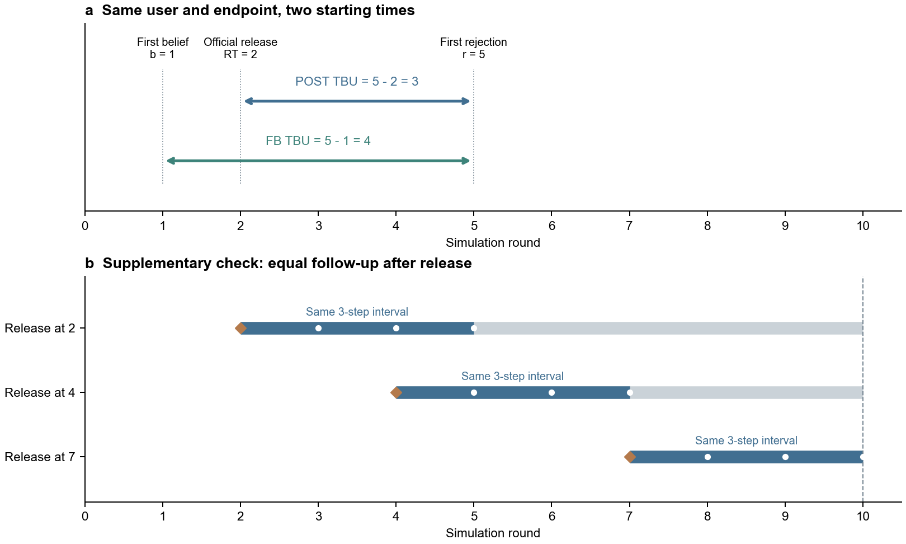
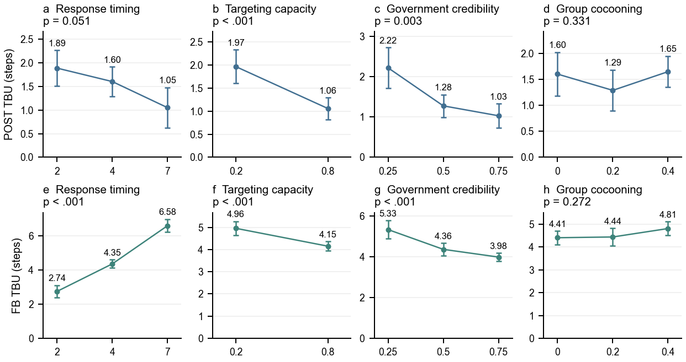
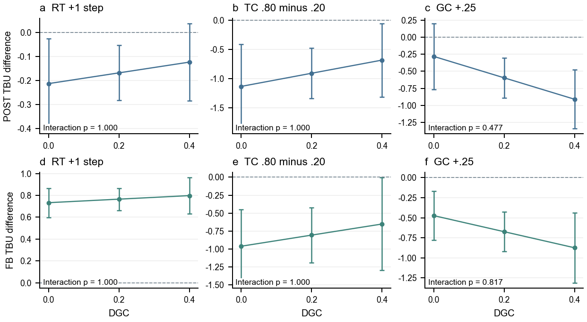
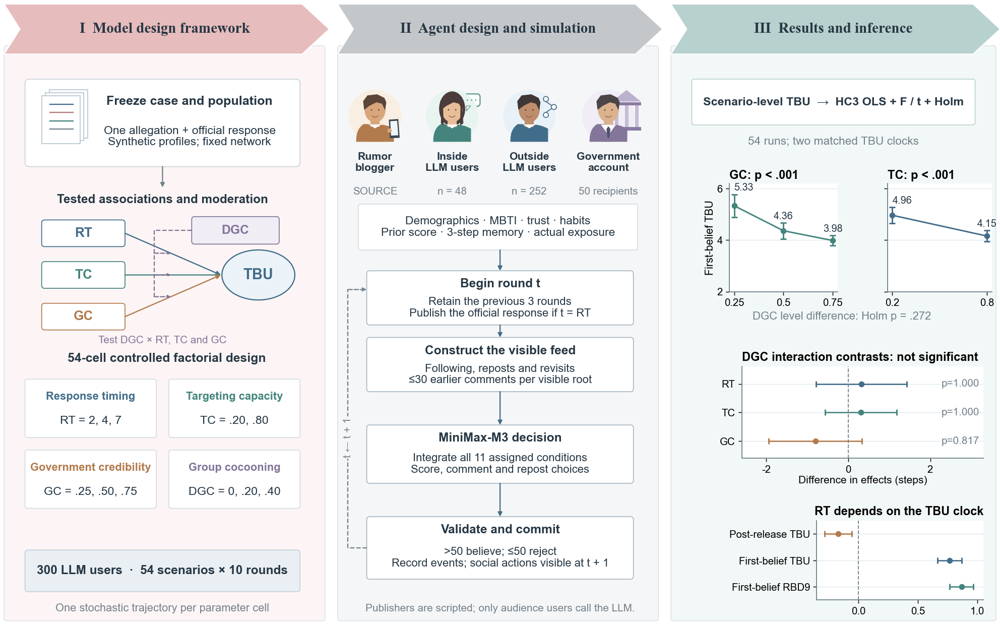

两种TBU定义的比较与研究结果
基于完整54组、每组300名LLM用户、10轮轨迹重新计算。两种定义全部保留，没有根据显著性选择其中一种。本次仅重分析已保存结果，没有新增LLM调用。
先把两个时间起点说明白
令 b 为用户第一次评分高于50的轮次，RT 为政府发布辟谣的轮次，r 为该用户在发布当轮及之后首次从相信转为不相信的轮次。终点为实际观察到的状态转变，不是政府发布本身。
两者的准确关系是：FB TBU−POST TBU＝RT−b。若用户在政府发布前就已相信，FB会包含等待政府回应的时间；若首次相信发生在发布之后，RT−b可能为负。两种指标的数值和响应时机的方向可以不同。

图1 上图用同一个用户解释两种计时起点；下图说明“共同3轮窗口”如何对齐观察时长。示例时间线不是真实用户记录。
共同3轮窗口到底是什么意思
实验在第10轮结束，第2、4、7轮发布后分别只剩8、6、3轮可观察。补充检验只取各自发布后的前三轮，以统一观察长度。发布当轮发生的更新按0轮等待计入；之后3轮内更新使用实际等待，3轮内没有更新则使用3轮上限。这个“受限等待”是另一个明确标注的补充指标，不会把你的POST或FB TBU强行变成3轮。
PRUD3的分析对象是政府发布前一轮仍相信的用户，和两套主TBU的“已观察到转变者”不同。它不能单独证明哪个计时定义正确，也不能与主指标的p值直接拼接成一种结论。这里的3轮是统计随访窗口；Agent保留3轮临时记忆属于另一个模型设定。
这次纳入了哪些数据
共有一次后续再次相信的未结束新片段；它不会抹掉已经观察到的第一次更新。757次合格更新在转变当轮或之前均有官方信息接触记录，但接触在先不等于已识别个体因果效应。
按54个情景等权平均：POST为1.512轮，FB为4.557轮。如果把757条用户记录混在一起加权，分别是1.472与4.428轮。本次回归使用前者的情景级数据，不把757人次当成757次独立实验。
不同因素水平的差异
使用四因素分类加性模型，分别检验每个因素的整体水平差异。主表对两套TBU的8项F检验统一作Holm校正；两两比较对20项统一校正。表格同时保存各自指标内的校正结果，避免隐去敏感性。
FB口径下，响应时机、定向能力和政府信誉均有显著整体差异。POST口径下，定向能力和政府信誉显著，响应时机在两套指标联合校正后为p=.051；只在POST内部校正时为p=.034。群体茧房程度在两种口径下均未显著。分类F检验同时比较全部水平，连续M3的t检验则检验在指定线性形式下的斜率；模型与零假设不同，不能要求它们给出同一个p值。

图2 同一批转变记录、不同计时起点下的调整后均值。上排POST，下排FB；误差线为逐项HC3 95%置信区间，标题p采用两套指标联合Holm8校正。
最清楚的实质结论：GC由.25升至.75，FB平均缩短约1.35轮；TC由.20升至.80，FB平均缩短约0.81轮；RT由2推迟至7，FB平均延长约3.84轮。TC在代码中表示50名直接接收者的圈内比例，不是对“当前相信者”的识别准确率。上述差异控制其他因素，但仍是当前模拟的一次实现。
茧房程度是否产生调节
用中心化M3分别加入RT×DGC、TC×DGC和GC×DGC。调节检验回答“某因素的效应是否随DGC改变”，与某一个DGC层内是否显著不同。这里对两套指标的六项交互统一Holm校正。
三项交互在两套定义中都没有得到校正后的显著支持。完整分类交互模型也没有提供校正后的显著调节证据。可以报告不同DGC下的效应点估计和不确定性；当前数据不能写成“已证实茧房调节作用”。

图3 DGC各水平下的条件效应。上排POST，下排FB。置信区间与整体交互检验一起看，不能仅凭曲线斜率判断调节成立。
保留旧版严格分析，并检查未完成更新
为了保持与旧报告可比，我们另行计算r>RT的POST和FB：475个相同事件、52个情景均值。两组没有严格发布后事件的情景仍留空。主比较纳入发布当轮的282个有效转变，是一个透明的纳入规则调整。
RBD9以第1轮已相信的911个人—情景记录为固定队列，把未观察到更新的历时限制在9轮内，保留未完成者。它涉及47个不同的圈内用户ID，不能自动外推为圈外用户的效应。限制平均历时的目的，是让尚未完成更新的人也进入一个有限、可解释的平均量，而不是把他们的真实TBU假定为9轮。方法依据：Royston和Parmar，2013。
两套结果应怎样选择和写作
若研究问题是“谣言被相信后总共持续多久”，FB更贴合；若问题是“政府发布后，已观察到更新者的等待多久”，POST更贴合。可以将两者并列为互补结局。FB显著的RT效应包含等待政府发布的时间：它支持总历时随响应推迟而增加的模拟关联，但不能单独说明收到官方信息后的认知更新更慢。
两套主均值都只描述已完成更新者。222例未完成者不应从“全体相信者的平均更新速度”讨论中消失。当前没有独立重复运行，没有不辟谣对照，DGC又改变总体来源信任，因此结果应写为模型内部的探索性关联，并保留全部分析记录。
可用于论文的英文结果描述
Across 54 completed scenarios, 757 observed belief-to-rejection transitions occurring in or after the official publication round contributed to both endpoints. The equally weighted scenario means were 1.512 steps for publication-to-update TBU and 4.557 steps for first-belief-to-update TBU. HC3-robust categorical models with Holm correction across eight level tests supported government-credibility and targeting-capacity differences under both definitions. Response timing showed a strong level difference for first-belief TBU, whereas its publication-based result was borderline after joint correction (adjusted p=.051). Compared with RT=2, RT=7 was associated with 3.838 additional steps of first-belief TBU (95% CI 3.317–4.358). Raising GC from .25 to .75 and TC from .20 to .80 was associated with reductions of 1.348 steps (95% CI .865–1.831) and .806 steps (95% CI .424–1.187), respectively. Neither endpoint provided multiplicity-adjusted evidence of DGC moderation. Because first-belief TBU includes time awaiting official publication and both observed-converter means exclude unresolved first episodes, these associations should not be interpreted as identified individual causal effects.

图4 已同步更新研究报告中的三栏框架图：右栏采用FB均值及调节对比，并同时展示两种计时起点下的RT系数。
文件与数据来源
源数据：D:/Codex/runs/V7_Optimized_20261027_145124/_batch54/20261027-145124，54组trajectory/belief_measurements.csv均已验证SHA256，未改动原始模拟结果。
配套Excel包含双口径检验、全部两两比较、M1–M3、情景均值、980份曾相信用户记录及方法说明。Excel中的计数与均值可由明细公式核算；修改明细不会自动重拟合统计模型。HC3实现说明。